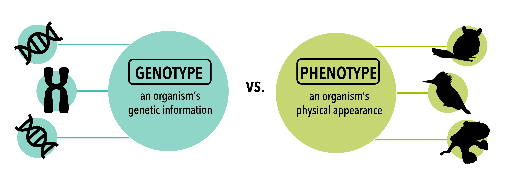
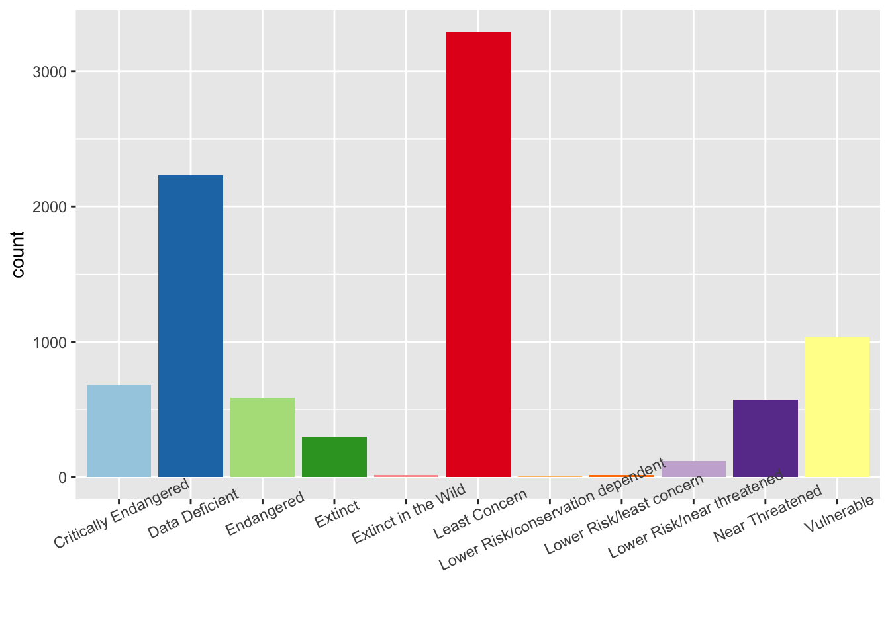
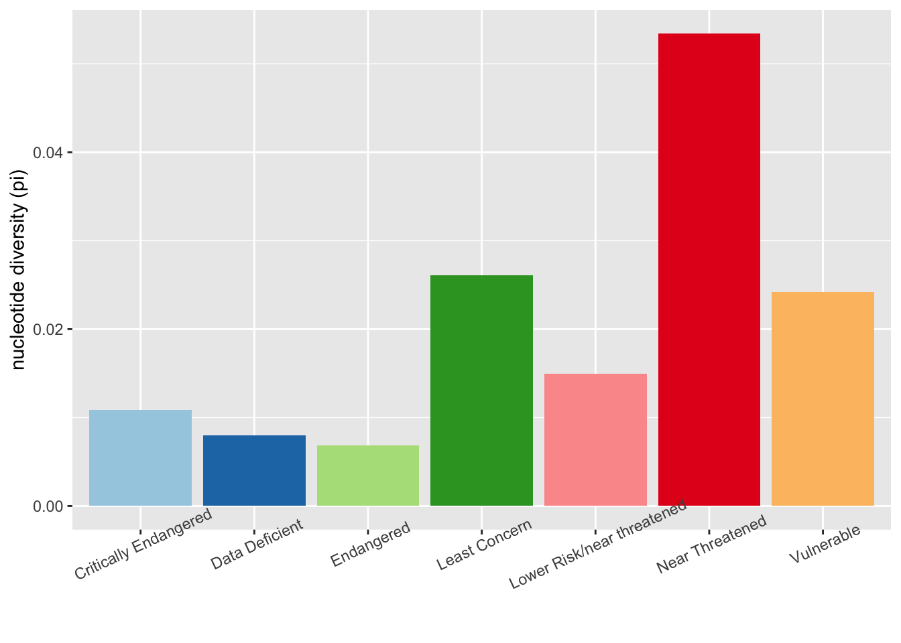

5 Population genetics and conservation
Population genetics is the study of the genetic variation (remember what we learned in Chapter 3) within a population of a species, which we will refer to as genetic diversity. This includes the distributions of genetic diversity over geographic space and changes in genotype and phenotype frequencies in response to the processes of genetic drift, gene flow, and natural selection. See here for more information. Conservation genetics is the use of this genetic information to inform management decisions to preserve biodiversity.

5.1 Loss of genetic diversity
Loss of genetic diversity is a common concern for conservation biologists. Many populations of threatened and endangered species suffer from low diversity of genes at the individual and population levels. But how is genetic diversity lost? There are several factors that can contribute, singly or in concert together, to the loss of genetic variation both in individuals and populations.
5.1.1 Small population size
Endangered species typically have declining numbers of individuals. As individuals are lost, so is the variation of the DNA that they carry. Factors that increase mortality or reduce birth rates, such as disease, pollution, overhunting, or low resource availability due to habitat destruction all cause populations to shrink. Additionally, destruction of a species habitat in particular places can create smaller populations by breaking up the remaining habitat areas that are suitable for the species. This habitat fragmentation also isolates populations from each other; populations are trapped in pockets of remaining habitat but are unable to interact with other populations due to inhospitable habitat or barriers like roads or fences blocking their movement.
The total number of individuals within a population is not the only factor that needs to be considered when thinking about how population size affects genetic diversity. Within any population, only a subset of the individuals will be capable of reproducing at a given time; others may be too young, too old, or too unhealthy to reproduce. The number of breeding individuals in a population is called the effective population size, and is necessarily smaller than the total population size. Because it is only these breeding individuals who will pass their DNA on to the next generation, the effective population size directly impacts genetic diversity. Certain factors, such as selective hunting or poaching, can disproportionately reduce effective population size. For example, older adult African elephants have been the primary target of poachers in search of ivory because elephant tusk size increases with age. This targeting of adults has affected elephant population demographics, skewing populations younger overall and inhibiting reproduction in heavily poached populations.
Because each individual in a population can only carry a certain number of alleles for each gene, small populations tend to have fewer alleles overall and the alleles that are present may only be carried by a handful of individuals, making them rare. These rare alleles are vulnerable to loss; if anything prevents those individuals from breeding, they will not be present in the next generation of that population. However, this is not the only reason that small population size is concerning. For sexually-reproducing species, smaller populations also means fewer potential mates; lack of options for mates may result in fewer individuals breeding (further reducing effective population size) or reduced offspring quality due to poor compatibility of parents who might not have paired if they had had more choices of mates.
5.1.2 Genetic drift
Genetic drift is a process in which populations diverge genetically from other populations of the same species. This occurs partly through the loss of rare alleles due to random occurrences that have nothing to do with the function or adaptive value of the allele in question. When populations are small, the loss of genetic diversity due to random processes is bigger.
Conservation biologists must consider the negative impacts of genetic drift not only in existing populations, but also in captive breeding programs and in newly-established populations created during reintroduction efforts. Founder effects occur whenever a subset of an existing population is used to create a new one. These founding individuals may not carry a representative proportion of the genetic diversity in the existing population, especially if only a small number of founders are used. This in turn leads to the new population having lower genetic diversity than the previous population it was derived from. Conservationists selecting individuals for use in captive breeding and reintroduction efforts must pay careful attention to the genotypes of these individuals to ensure that as many alleles as possible from the parent population are carried forward into the new populations, minimizing loss of genetic diversity in this process.
A slightly different example of a random loss of alleles is a population bottleneck. A bottleneck is an event that suffers a fast (evolutionary speaking) reduction in population size where may alleles are lost. For example, if a hiker accidentally stepping on a group of brown and green beetles; if the hiker’s foot happens to fall on all of the green beetles in the group, the allele that causes this green coloration may be lost in this beetle population, even though an individual beetle’s color did not make it more or less likely to be stepped on. This example also highlights a connection between small population size and genetic drift; if the beetle population were larger, it is unlikely that the hiker’s foot would randomly land on all of the green beetles. Although genetic drift occurs in all populations, larger populations are less likely to suffer extreme effects such as total loss of an allele than small populations, due to increased redundancy in the larger populations; larger population size simply means there are probably more copies of any given allele. Small populations are more likely to have alleles that are carried by only a few individuals, and these rare alleles are vulnerable to loss by random chance.
5.1.3 Gene flow
Isolation of populations also makes them more vulnerable to the effects of genetic drift. Isolation prevents gene flow, the sharing of alleles between populations through the dispersal of individuals into and out of these different breeding groups. A population that frequently trades individuals with other nearby populations of the species may lose a particular allele through genetic drift, but then regain it through gene flow when a new member carrying that allele joins the population. Isolated populations do not have this outside source of alleles; once an allele is lost through drift, it remains gone. Conservation biologists are particularly concerned about small, isolated populations because these populations drift faster than larger, better-connected populations. Habitat fragmentation contributes to population isolation as well as reducing population size, and so is a major factor contributing to loss of genetic diversity. A reduction in gene flow leads to population differentiation and can be measured using genetic data.
5.1.4 Inbreeding
When two individuals with many of the same alleles breed, their offspring are likely to have lower genetic diversity than the offspring of individuals with very different alleles. They are also more likely to be homozygous at many loci; in other words, they are likely to carry two copies of the same allele for a given gene, because that was the allele carried by both of their parents. In contrast, an individual with two different alleles for a gene is considered heterozygous. Breeding of genetically similar individuals who produce highly homozygous offspring is referred to as inbreeding, and is often a result of matings between close relatives such as siblings.
Inbreeding occurs when mate choice is limited, such as when overall or effective population size is very small. In these situations, relatives may be the only available mate options. This is especially common in isolated populations, where dispersal to a new population in search of mates is not possible and unrelated individuals are not immigrating in.
In some cases, inbreeding can be exacerbated by population-specific changes in behaviors that affect mate choice. In these situations, individuals may prefer to breed with members of their own population, who are more genetically similar to them, even when presented with potential mates from outside populations. For example, a study of rufous-collared sparrows found that female sparrows preferred the songs of males from their own population to those from a neighboring population that sang slightly differently, a preference that likely limits gene flow between these two populations (Danner et al. 2011)
Inbreeding is of concern in conservation biology because of its potential to reduce genetic diversity at both the individual and population levels. One reason for concern is inbreeding depression, a situation in which homozygosity at one or more loci produces individuals who are lower quality and less fit. This happens when certain alleles are maladaptive. For example, a gene may code for a particular protein, but a mutation in one allele for that gene causes that allele to produce a malformed protein that cannot be used. Such ‘broken’ alleles can be compensated for by the presence of a different allele for the same gene; in this example, a heterozygous individual could carry one copy of the broken allele but still have a working version of the protein. However, homozygous individuals are at risk of carrying two broken versions, and thus being unable to produce the necessary protein. While natural selection often removes deleterious mutations from populations over time, alleles with negative mutations can remain in populations indefinitely if they are recessive and so their maladaptive effects only appear in individuals that are homozygous.
Heterozygosity is also beneficial at the population level. Different combinations of alleles can produce unique phenotypes not created by any allele paired with itself. This increased diversity of phenotypes in a population produces greater flexibility when faced with environmental challenges. A diverse population is more likely to have individuals within it whose combination of traits is adaptive in the current environmental conditions and so are able to survive the challenge and pass on those alleles. Therefore, populations that are more heterozygous overall have greater potential to adapt to environmental changes, rather than be driven extinct by them.
5.1.4.1 Measuring heterozygosity within and between populations
Heterozygosity is a measure of genetic variation that can be estimated within an individual, within a population of individuals of the same species, and between populations of the same species. These measurements of genetic variation can inform conservation management decisions by guiding the development of dispersal corridors and/or translocation events to restore levels of genetic variation within species.
Heterozygosity in a population is the proportion of individuals that are heterozygous at that locus, and can be averaged across many loci (H). This estimate is used as a measure of genetic variation within a population to assess population stability, in other words, is there enough genetic variation among individuals within a population to avoid a risk of extinction?
Image that represents heterozygosity at each level and includes fragmentation
5.1.4.1.1 Heterozygosity example
In the 1800s and most of the 1900s black bears in FL were hunted without regulation and much of their habitat was destroyed due to human development. By the 1970s, only 300-400 bears remained. This type of reduction in population can severely reduce genetic diversity and black bears were subsequently listed as threatened in FL (cite). Cryptorchidism (undescended tesicles, a common phenotype when mammals suffer from inbreeding depression) was observed in black bears of FL in the mid-nineties (Dunbar et al. 1996). Not only did the FL black bears suffer a decrease in population size and a loss of genetic diversity, their habitat was severely fragmented. Researchers decided to use genetic data to assess the levels of genetic variation within and between populations (Dixon et al. 2007). The used 12 genetic loci to estimate heterozygosity within and between populations. They found that genetic diversity in the FL balck bears was lower in populations that are smaller and less connected to other populations, and that populations with at least 200 individuals is needed to maintain levels of genetic variation to match that of unaffected balck bears in other parts of the country. Finally, even though many of these populations are close enough for bears to disperse, the ability to cross highways is limited (find recent numbers), so the researchers recommend creating dispersal corridors, either naturally, or with the use of crossing structures. In this case, considering populations as units of conservation is important, rather than considering the whole species. For example, if one small population is particularly vulnerable, it is much more cost-effective to focus management decisions on this population, rather than the entire geographic region.
5.2 Units of conservation
Throughout this book we have defined species as one of the fundamental levels of biological organization. The designation of species is a useful tool in conservation because it provides a basic unit for management. However, the use of species can be problematic for several different species. First, defining species is not as straightforward as it may seem (see chapter species delimitation). Second, oftentimes, populations within a species might need special consideration (recall FL black bear example from above). The use of genetic tools can aid in the identification of conservation units. Species as units of conservation works by… For example, DNA sequence data was used to estimate the number of species in giraffes several times in order to determine how many units exist and which ones are in most need of conservation. Put short description of studies here.
On the other hand, simply defining species will not always offer the best guidance for management decisions. Evolutionary significant units (ESUs) and Management Units (MUs) are also used to make important management decisions. And ESU is a group of individuals that share an evolutionary history that is unique to other groups within that species (see chapter phylogenetics) and thus, deserve some independent recognition even though they would not be considered a separate species. Considering these units as important can aid in preserving important locally adaptive genetic variation within a species. MUs represent populations that display some accumulation of unique alleles, but are not necessarily phylogenetically distinct. In other words, one considers the evolutionary history of the group as important (ESU), while the other only considers uniqueness of the population, regardless of evolutionary history (MU). This genetic information can be put to use by incorporation geographic information. If a population exists that contains unique genetic variation for that species, management efforts can be made to preserve the geographic species occupied by this specific population, when most of the other genetic variation within the species is likely to be maintained naturally without any intervention.
5.3 Practice
This genetic variation we have been discussing is resposible for the diversity we observe within species (e.g., thermal tolerance, body size). This diversity is essential if species are going to survive environmental change. The Convention on Biological Diversity (CBD) included genetic diversity among its 2010 biodiversity targets.
The IUCN red list is an international effort to list species as either least concern (LC), near threatened (NT), vulnerable (VU), endangered (EN), or critically endangered (CR) in order to adequately protect species that are in need.
This exercise will use data from an open-source genetic database to answer the question: Is the IUCN red list designed to help protect species with low genetic diveristy that would put them at a higher risk of extinction?
5.3.1 Learning objectives:
- Explain why genetic diversity is an important concept in conservation biology.
- Provide examples as to why open-source databases are valuable tools in conservation biology.
- Interpret plots in order to answer a research question.
If you would like to skip the R code version of this exercise, jump ahead to the click and play section.
5.3.2 Data
Please see chapter 4 for details on downloading data from phylogatR.
Navigate to the IUCN red list website. You will need to create an account to download data.
- Click on
Advanced - On the left tool bar, click on
Taxonomy - Click the appropriate check boxes/arrows to narrow the selection down to your group
- Download the
Search Results
Your download will be a zip file called redlist_species_data_ followed by a long list of numbers and letters. If you are using a Mac the zip file will unzip when you double click on it. If you are using Windows, you must extract the files first.
IMPORTANT: Tell R which working directory (i.e., folder) you would like to work from.
- Click on
Sessionin the RStudio tool bar at the top of your screen - Click on
Set Working Directory->Choose Directory - Find your
phylogatr-resultsfolder and choose it ** for purposes of this exercise we renamed our folderphylogatr-results-molluscssince these are the data we downloaded and we didn’t want it to get confused with other phylogatR downloads - put your IUCN data in your
phylogatr-resultsfolder
The following examples will be from the Phylum Mollusca. Your plots should look similar but they won’t be exactly the same, if you downloaded data from another taxonomic group.
Since all these packages will be used, load them all now. You might get some warning messages, but these are usually ok, so let’s ignore them. Make all the packages are installed first, and if R asks if you’d like to update other packages, go ahead and click yes.
library(adegenet)
library(ggplot2)
library(tidyr)
library(tools)
library(pegas)
library(stringr)5.3.2.1 Import IUCN data
This imports the csv file and creates an R object called assessments. Remember we moved all the IUCN data into our phylogatr-results folder.
assessments <- read.csv("phylogatr-results-molluscs/assessments.csv")In the upper right block of RStudio you will see an Environment tab. Click on it if it is not already chosen. Under Global Environment you will see the objects from your R session. You can click on the assessments object to view it.
You can use R to list the column headers.
names(assessments)## [1] "assessmentId" "internalTaxonId"
## [3] "scientificName" "redlistCategory"
## [5] "redlistCriteria" "yearPublished"
## [7] "assessmentDate" "criteriaVersion"
## [9] "language" "rationale"
## [11] "habitat" "threats"
## [13] "population" "populationTrend"
## [15] "range" "useTrade"
## [17] "systems" "conservationActions"
## [19] "realm" "yearLastSeen"
## [21] "possiblyExtinct" "possiblyExtinctInTheWild"
## [23] "scopes"We are the most interested in columns 3 and 4, so lets clean it up a little so it is easier to use later.
assessments <- assessments[,3:4]Create a plot to look at the distribution of red listings in this group.
ggplot(assessments, aes(x=redlistCategory, fill=redlistCategory)) + geom_bar() + scale_fill_brewer(palette = "Paired") + theme(axis.title.x=element_blank(), legend.position = "none") + theme(axis.text.x = element_text(angle = 25))
We can also view these in a table.
table(assessments$redlistCategory)##
## Critically Endangered Data Deficient
## 682 2229
## Endangered Extinct
## 586 299
## Extinct in the Wild Least Concern
## 14 3291
## Lower Risk/conservation dependent Lower Risk/least concern
## 4 17
## Lower Risk/near threatened Near Threatened
## 118 575
## Vulnerable
## 1032What do all the categories mean? Hint: Your dataset might not contain all these categories. Some of them are older categories that need to be updated in the database.
5.3.2.2 Import and summarize sequence data
To get the information we need from all the sequence alignments from our phylogatR download, we’ll first create a list of all the sequence alignments and put them in an object called myfiles.
myfiles <- list.files(pattern = ".afa", full.names=TRUE, recursive = TRUE)Here we loop through the list stored in myfiles to calculate genetic diversity for each sequence alignment. All data will be written to a csv file called phylogatr-iucn.csv and stored in the current working directory. This step will take a few minutes to run, and will take longer if you have a lot of species.
for (f in myfiles) {
#get species and gene name
sp <- basename(f)
sp <- file_path_sans_ext(sp)
#read in fasta file
seq <- fasta2DNAbin(f, quiet=TRUE)
#get number of sequences
n <- nrow(seq)
#calculate nucleotide diversity
pi <- nuc.div(seq)
#write data to file
write.table(data.frame(sp, pi, n), file="phylogatr-iucn.csv", quote=FALSE, row.names=FALSE, col.names=!file.exists("phylogatr-data-iucn.csv"), append=TRUE, sep=",")
}5.3.2.3 Merge IUCN and genetic data results
First, import the output from the previous step, then look at the column headers.
genetics <- read.csv("phylogatr-results-molluscs/phylogatr-iucn.csv")
names(genetics)## [1] "sp" "pi" "n"sp = species
pi = nuceotide diversity
n = the number of sequences
Now, we can merge the data from both databases. We have two objects in our R environment. 1) assessments has the IUCN data and 2) genetics has the calculated genetic diversity.
We’ll need to reformat the species names from phylogatR so they can match those found on the IUCN database. The species names will be merged and if there is a species that has data from both databases, it will be saved in a new R object.
#reformat phylogatR species names
genetics$sp <- sub("-", " " ,genetics$sp)
genetics <- separate(genetics, sp, into=c("scientificName", "gene"), sep="-")
#merge
dataset <- merge(assessments, genetics, by = "scientificName")
names(dataset)## [1] "scientificName" "redlistCategory" "gene" "pi"
## [5] "n"Remember, you can click on objects in your R Environment to view them.
This is what the first six lines of the mollusc data look like.
head(dataset)## scientificName redlistCategory gene pi n
## 1 Alasmidonta varicosa Vulnerable COI 0.000000000 3
## 2 Alloteuthis media Data Deficient COI 0.004959925 21
## 3 Alloteuthis subulata Data Deficient COI 0.003960396 3
## 4 Alopia livida Least Concern COI 0.014712006 11
## 5 Alopia monacha Least Concern COI 0.020174482 8
## 6 Amblema plicata Least Concern COI 0.006259781 35.3.2.4 Data analysis
First, we’ll make a plot to visualize our data. This is a plot of mean nucleotide diversity found within each red list category.
#calculate mean nucleotide diversity for each group
mean_pi <- aggregate(dataset$pi, list(dataset$redlistCategory), mean, na.rm=T)
ggplot(mean_pi, aes(x = Group.1, y = x, fill = Group.1)) + geom_bar(stat = "identity") + scale_fill_brewer(palette = "Paired") + theme(axis.title.x=element_blank(), legend.position = "none") + theme(axis.text.x = element_text(angle = 25)) + ylab("nucleotide diversity (pi)")
Now we can test whether there is a significant difference in nucleotide diversity between those species that are threatened and those that are not. A t-test compares two groups so first we’ll group categories into threatened and not-threatened and call them as such. We’ll remove the data deficient species (notice we are overwriting the dataset object and it will no longer contain the data deficient assessments).
dataset<-dataset[!(dataset$redlistCategory=="Data Deficient"),]
notthreatened<-c('Near Threatened', 'Least Concern', 'Lower Risk/least concern', 'Lower Risk/near threatened')
for (i in 1:nrow(dataset)) {
if (dataset$redlistCategory[i] %in% notthreatened) {
dataset$category[i] <-'notthreatened'
}
else {
dataset$category[i] <-'threatened'
}
}Compare the two groups.
threatened <- dataset$pi[dataset$category=="threatened"]
notthreatened <- dataset$pi[dataset$category=="notthreatened"]
t.test(threatened, notthreatened)##
## Welch Two Sample t-test
##
## data: threatened and notthreatened
## t = -2.2634, df = 50.678, p-value = 0.02793
## alternative hypothesis: true difference in means is not equal to 0
## 95 percent confidence interval:
## -0.026176358 -0.001565606
## sample estimates:
## mean of x mean of y
## 0.01434120 0.02821218In this case there is a significant difference in genetic diversity among those species that are listed as threatened vs. not threatened.